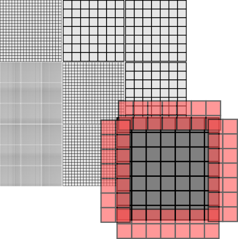
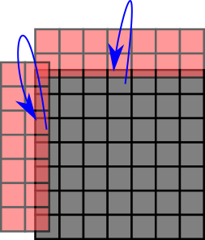
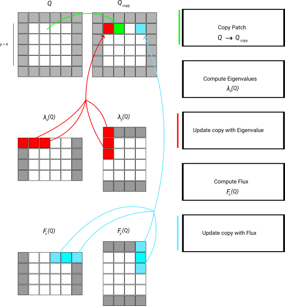

|
Peano
|
|
Peano
|
ExaHyPE 2 offers a range of Finite Volume solvers. They are designed to be stand-alone solvers, but nothing stops you from using them as a posteriori limiters by coupling them to higher order schemes. Some hands-on descriptions of the numerics can be found in the tutorial section.
ExaHyPE's Finite Volume scheme is based upon block-structured Cartesian meshes. All Finite Volume solvers work with blockstructured AMR: They embed \( p \times p\) patches into the octants (cells of the spacetree). To avoid confusion, I prefer to use the term volume for the cells within the patch, as cell would be ambiguous given that we construct the host mesh from spacetree cells.

With the Finite Volume methods, we only have single-shot methods at the moment. That is, Peano runs over the octants of the mesh, i.e. the patches. Per patch, it calls and ExaHyPE update kernel, which takes the patch and moves it forwards in time by a given \( \Delta t \). ExaHyPE is shipped with several update schemes. You can obviously also write your own numerical scheme manually.
Every patch has to depends upon its neighbouring, i.e. face-connected patches. To be able to do this, ExaHyPE passes a \( (p+2N)^d \) patch into a kernel, where \( p \) is the number of volumes per patch, \( d \) is the dimension, and \( N \geq 1 \) is halo size. Different Finite Volume schemes have different halo sizes. You may assume that ExaHyPE fills these halo values with valid data from the neighbours, i.e. their synchronisation is none of the kernel's business. The input is called \( Q_{in} \) from hereon. The kernel returns a \( (p+2 N)^d \) with the new time step's data, called \( Q_{out} \).
Here are some details about the data used within the kernels:
Each Finite Volume solver embeds \(N \times N\) patches into the octants (cells of the spacetree). ExaHyPE is built on top of Peano, and Peano realises a strict element-wise traversal, i.e. there's no way to access the neighbour cell of a cell directly. However, we can hijack the faces.
The idea here is that we embed a \( 2N\) \( (d = 2) \) or \(2N^2 \) \( (d=3) \), respectively, patches into each face. Let this auxiliary patch overlap the adjacent cells. Then, we effectively have a halo of one cell available within each cell: We know the cell data. We also have access to the \( 2d \) faces where each hosts a degenerated patch. One layer of this patch is a copy of our own data, i.e. does not give us additional information. The other layer of the auxiliary patch however holds data from the neighbour. It gives us information from the neighbour patch.
Projecting the patches onto the face data structures and back is a mechanical task. Therefore, we offer action sets to relieve you from the pain to recode it over and over again. Using them, you add the projections to your algorithmic steps, and the API then automatically injects these features (aspects) into your code:

The image above illustrates what ProjectPatchOntoFaces does: It knows the dimensions of both the patches and the face auxiliary data structures and thus can ensure that the right data is copied from the cell into the \(2^d\) faces when we leave a cell throughout the grid traversal.
The action set ReconstructPatch works slightly different yet can be read, from a patch projection point of view, as transpose of ProjectPatchOntoFaces: It reconstructs the data into a separate patch, the reconstructedPatch, which is accessed through fineGridCell plus the name you gave this reconstructed patch. This auxiliary patch has the dimensions \(N+2 \times N+2 \times N+2\). The action set copies over the cell's patch data into this auxiliary patch and uses the faces to supplement it with halo data around it. So that, in the end, you get the original patch data plus the cells around it in one big patch.
The patch operations offer most of the basic data structures and action sets. The actual patches can either be embedded as plain arrays into each cell, or they can be held as arrays on the heap and the cells hold (smart) pointers to these heap objects. It depends on your use case which variant is faster.
On the Python API side, the class exahype2.solvers.fv.FV is the base class of all Finite Volume solvers. Its class documentation holds a lot of background information on the solver design and data flows. The production FV solvers are currently single-sweep solvers. Some solver variants can additionally generate fused compute kernels for accelerator-oriented benchmark and integration paths via their fuse_compute_kernels option.
Our discussion of an implementation of the scheme - which can be read as blueprint of our compute kernels in ExaHyPE - is inspired by
who write down the algorithm as a sequence of tensor multiplications, i.e. generalised matrix-matrix equations. This does not work in ExaHyPE 1:1 as we support non-linear PDEs in the generic kernel formulations. However, we can use similar operator concatenation ideas.
We demonstate the data flow by means of the simplified numerical flux which only takes the average. This algorithm consists of a strict sequence of steps:
Now all temporary data are available. We prepare the output and then add the PDE contributions. This part is basically a stencil variant. Or we can write it down as a tensor-vector product which is added to \( Q_{out} \):
The extension to Rusanov for example is straightforward, as long as we take into account that our "stencil" here has to incorporate the max function. Below is schematic illustration of the data flow:

Note that the scheme as well as the description lack an important detail: Every single step is to be done over a set of patches, as we update multiple patches in one go. In the kernels, we write down this logic as a sequence of operators applied to the whole set of patches in one sweep.